오늘의 수리 전/후 — TAC 표·캐럿·조합
2026-08-10 하루 동안 신고·적발되어 수리한 6건의 전/후 실측. 상세 계측과 한컴 실측 근거는 캐럿·선택 정밀 분석 보고서 §5·§6.
1배포 엔진 교체 — TAC 표가 줄 머리로 이탈하던 조판
배포본(sc-hazel-kappa)의 vendor wasm이 8/1 구엔진이라, 텍스트 사이에 앵커된 글자처럼 취급 표가 줄 머리로 이탈하고 그림의 기준선 잠김이 없었다. 8/9 롤업 + 오늘 수리를 포함한 신엔진으로 재벤더링했다.
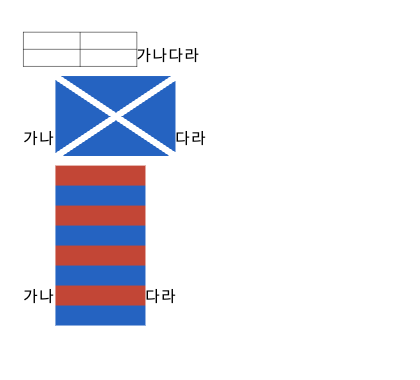
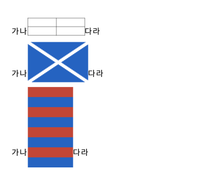
2TAC 표 문단의 캐럿·선택 좌표 붕괴
표 문단 전용 레이아웃이 char_start를 텍스트 좌표로 기록해(워커는 논리 좌표 기대)
표 뒤 글자의 밑줄 캐럿이 두 글자 폭이 되고 마지막 글자 선택 rect가 비었다. Home/End 캐럿은 줄
상자(표 높이)만큼 커졌다.
| 항목 | 수리 전 (실측) | 수리 후 (실측) |
|---|---|---|
| 표 뒤 '다' 뒤 밑줄 캐럿 | 32px (두 글자 폭), y 어긋남 | 16px (한 글자 폭) |
| 마지막 글자 '라' 선택 rect | 빈 배열 → 끝 캐럿 오락가락 | x274.7 w16 정상 |
| Home/End 캐럿 높이 | 35.5px (표 높이) | 16px (텍스트 높이 — 한컴 정합) |
3IME 조합 표시 — 검은 박스 깜빡임 → 유령 글자 → 정상
조합 글자는 엔진이 문서에 넣어 캔버스가 이미 그리는데, 그 위에 블랙박스+흰 글자 오버레이가 한 장 더 있었다(1차 신고: 검은 사각형 깜빡임). 오버레이를 투명 글자로 바꾸자 캔버스 글자와 이중 표시돼 줌/스크롤 어긋난 곳에 유령 글자가 보였다(2차 신고). 오버레이를 제거하고 밑줄 캐럿만 남겼다.
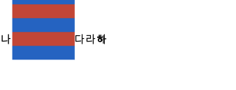
4공백 이동 캐럿 — 텍스트로 점프해 보이던 문제
"확정 글자 뒤 = 그 글자 폭 밑줄" 스펙은 공백 앞으로 이동하면 캐럿이 직전 글자 밑에 그려져 공백을 건너뛴 것처럼 보였다. 한컴 규칙(이동/클릭 = 세로 캐럿, 밑줄은 조합 중만)으로 정합.
| "가나␣" 에서 ← 이동 | 수리 전 | 수리 후 (실측 x) |
|---|---|---|
| 공백 뒤 → 공백 앞 | '나' 밑에 밑줄 (공백 건너뛴 듯 보임) | 세로 캐럿 x265→257 — 공백 폭만큼만 이동 |
| 공백 앞 → 나 앞 | '가' 밑에 밑줄 | 세로 캐럿 x257→241 (글자 폭) |
5표 마지막 셀에서 ↓ 탈출 — 스페이스가 표를 밀던 버그
엔진 exit_table_vertical의 문서 끝 분기가 (문단 0, 오프셋 0) 하드코딩이라,
표가 마지막 문단일 때 마지막 셀에서 ↓로 나오면 커서가 표 앞에 놓였다. 캐럿은 표에 붙어
보이는데 스페이스를 치면 표 앞에 삽입돼 표가 밀렸다. 한컴 규칙(아래 탈출 = 표 뒤)으로 수리.
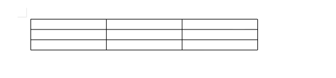
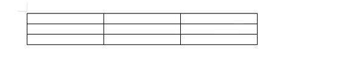
6표 뒤 한글 입력 — 첫 자모가 잔류하던 이중 입력
IME preedit 교체는 커서 논리 좌표로 삽입·삭제하는데, 엔진에 논리 삭제 API가 없어 텍스트
좌표 deleteText로 지우면 TAC 표 문단에서 한 칸 밀렸다 — 첫 자모가 안 지워지고 남아
"니들" → "ㄴ니들". 또 논리 삽입이 표 뒤 위치를 표 앞으로 밀어 넣는 천장도 함께 수리
(deleteTextLogical 신설 + 컨트롤 뒤 삽입 규약).
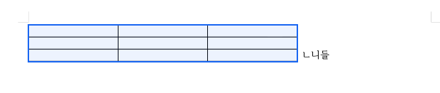
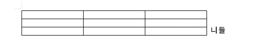
7표 UX 후속 신고 5건 (같은 날 저녁)
| # | 신고 | 수리 전 | 수리 후 |
|---|---|---|---|
| 1 | 텍스트 끝 Enter 시 마지막 글자가 새 문단으로 딸려 내려감 | "…알어?" → Enter → 다음 문단에 "?" (분할점 이중 변환) | 빈 문단 생성, "?" 제자리 — 분할 좌표 논리 통일 |
| 2 | 표 개체 선택 전/후 모양 | 현 빌드 이미 정합 — 선택 전/중/후 보더 좌표 픽셀 동일 실측, 한컴식 오버레이(⊘핸들+틴트)만 덧그림 | |
| 3 | 표 외곽 경계 리사이즈 호버/그립 | 외곽 ±4px 클릭을 그립이 소비 | 외곽 제거(내부 경계만 유지) — 외곽 클릭 = 개체 선택(한컴 정합) |
| 4 | 표 드래그 선택 | 본문 드래그가 표를 지나면 선택 소멸 | 표를 한 글자로 클램프 — 파란 밴드가 표 통째로 덮음 |
| 5 | 2쪽 이상에서 쪽이 옆으로 밀림 | 새 쪽 left가 풀 재사용 캔버스의 직전 폭으로 계산됨 (실측 x 111/111/358) | 폭 확정 뒤 스냅 — 전 쪽 left 동일 (실측 20/20/20) |
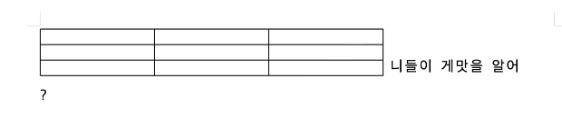
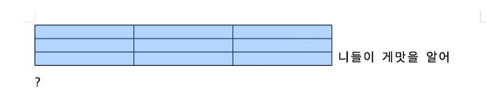
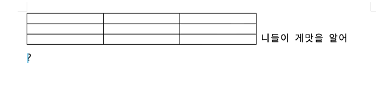
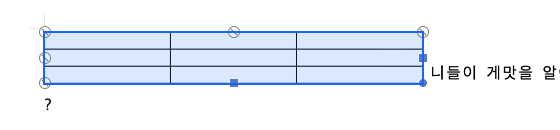
officex_tac_table_caret_selection.rs(3),
officex_tac_table_exit_nav.rs(2: ↓탈출=표 뒤 / 논리 삽입·삭제 왕복 원문 보존) +
픽스처 2본(한컴 원본 officex_tac_mid_anchor.hwpx, 표 단독
officex_tac_last_para.hwpx). 전체 게이트 nextest 통과 후 배포.실측: 스튜디오/배포본 직접 타이핑 재현 + 픽셀 계측 · 한컴 실측 근거는 캐럿·선택 정밀 분석 보고서 §5·§6 · 2026-08-10